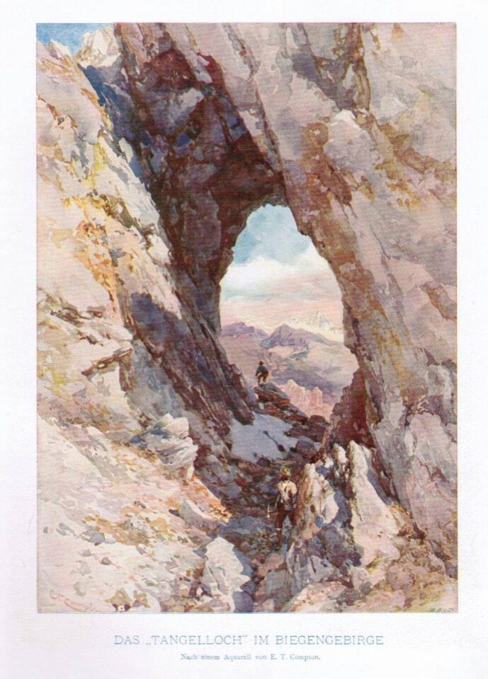

Giro dedicato a Pietro Samassa, leggendario cacciatore collinotto e intrepido esploratore dei suoi monti, guida alpina ante litteram. Per primo mise piede sulle cime dei monti di Volaia.
Consultate l'immenso lavoro di ricerca toponomastica di Enrico Agostinis: I luoghi e la memoria (e visto che siamo in tema, interessantissimo pure l'articolo L'altra Cjanevate).
Seguono le parole del Castiglioni:
«La toponomastica di questa cima è stata oggetto di lunghe discussioni e polemiche, poichè i valligiani di Collina davano il nome di M. Canale a tutto il massiccio dal Sasso Nero al Passo di Voláia, a causa dei numerosi profondi canaloni che ne solcano il versante S. Dal lato austriaco invece solo la prima cima aveva un nome (Seekopf), mentre tutte le rimanenti erano comprese nel nome generico della giogaia (Biegengebirge). Si credette quindi per molto tempo che il nome di M. Canale fosse il corrispondente del tedesco Seekopf e solo l'esplorazione alpinistica di questi monti potè mettere in chiaro che si trattava di due cime ben distinte, separate da una lunga cresta con profonde incisioni e da una grande gola. Il nome locale di Creta Forata deriva dal grande foro, bene visibile anche dal Wolayertal, che si apre nella cresta del monte in prossimità dell'intaglio (o Forcella del Buso) tra il M. Canale e la Creta Forata, assai più vicina a questa che a quello. Questo curioso foro ha un diametro di circa 5 m sul lato italiano e si allarga a forma d'imbuto verso il lato opposto, con un fondo ghiaioso in pendenza e un'enorme volta. E' chiamato il Tangelloch, dalla leggenda di un contadino del Lessachertal che voleva falciare il prato nel giorno di Maria, e quantunque ne fosse stato avvertito continuò ad affilare la sua falce (Tangeln), finche il diavolo se lo portò via; e tanta fretta ebbe Satana di fuggire con la sua preda, che passò attraverso la cresta dei monti, producendo il gran buco, che prese il nome dal misfatto. Pare del resto che questo fosse un'abitudine del diavolo, poichè nelle creste dei Monti di Voláia, come pure nelle Dolomiti di Sappada, simili fori, più o meno grandi, sono molto frequenti.»
«Già intorno al 1840 un cacciatore italiano saliva fino al gran foro, ma solo nell'agosto 1892 la cima veniva conquistata per la cresta Sud dall'avventuroso cacciatore e guida Pietro Samassa, che anche qui fu primo, come sulle altre vette della catena. Lo stesso Samassa vi guidò poi il 16 settembre 1896 i primi alpinisti G. Baldermann e A. Jaroschek [...] Ancora il Samassa, accompagnato da H. Wödl, il 12 settembre 1902, vi saliva per la cresta O provenendo dal M. Canale per la Forc. del Buso.»
Albeggia sui monti di Sappada.
La grandiosa visione del M. Canale e del Capolago che si ha dal rif. Tolazzi. Quante volte ho «sognato» di avventurarmi lassù fra quei meandri!

A Collina il gran canalone fra i monti Canale e Capolago è detto Agâr di Róndui (agâr ~ solco/canalone, Róndui ~ rombi/tuoni); così ne scrive Enrico Agostinis:
«Streghe e, beninteso, personaggi consimili d’ogni genere e fattura, giacché quassù era il regno del bestiario extranaturale, tutto insieme proteso a far danno agli incauti o temerari che di giorno osassero avventurarsi ventissù, e di notte ardissero superare l’invalicabile limite della straceàdo, la linea segnata dall’acqua piovana cadente dal tetto di casa. Di giorno confinati nell’Agâr di Róndoi, streghe e mostri scendevano di notte a impadronirsi del territorio e a ghermire chiunque non fosse al riparo del tetto di casa.»
«Il bacino di alimentazione dell’Agâr di Róndoi è di dimensioni gigantesche, e oltre alle acque meteoriche raccoglie in gran copia detriti, tronchi d’albero e ogni cosa che la furia degli elementi – acqua, vento, e soprattutto valanghe – trascina a valle. Molti anni fa ebbi la ventura di risalirne il tratto inferiore, e l’ambiente è davvero impressionante, di grande severità ma allo stesso tempo maestoso, con pareti concave alte decine di metri che aggettano sul fondo del canalone a mo’ di soffitto, salti di roccia inframmezzati da ripiani pressoché orizzontali.
E, naturalmente, nel profondo solco giace tutto ciò che rimane in attesa di essere trasportato a valle dalla prossima piena o dalla prossima valanga: tronchi incastrati, ceppaie, ghiaie. Nell’insieme, una sensazione di grande e incontenibile potenza. Altro che le povere streghe...»
Nell'Agâr di Róndui.
Su per l'ex sentiero di guerra per il canalone di dx.
Passaggio chiave, con resti di attrezzature di guerra.
La cengia nominata da alcune guide, porta a congiungersi alla via normale.
Ecco la cresta Ovest che saliremo.
I caratteristici gendarmi di cresta che ho sempre guardato.
Il soggetto principale di questa escursione non è il Capolago, ma il Tangelloch, sul quale aleggiava in me il fascino dell'ignoto assoluto: non sono mai riuscito a trovare una foto del foro, e per lo stesso motivo io non voglio pubblicarne di più dettagliate, per rispetto ad un luogo così misterioso e desiderato.
Non dimenticherò mai ciò che ho provato traversando su terreno infido per raggiungere il foro, il quale appare solo all'ultimo: proprio questo fatto mi aveva fatto crescere l'ansia, come se esso fosse sparito oppure che mi attendesse qualcosa di terribile. Non dimenticherò la meraviglia ad osservare «oltre» il foro, in quella splendida e tersa mattinata settembrina.
L'unica «foto» che fossi riuscito a trovare era il quadro del Compton: «Das Tangelloch im Biegengebirge», di cui ho comperato una copia e appeso in camera da letto.
Il Clap Niori (Sasso Nero) salito un anno prima.
Che giornata magnifica: qui la bellissima conca dell'Obere Volayer Alpe.
Verso il monte Canale.
Su senza via obbligata.
Il Cogliàns col Coston di Stella.
Finalmente vedo il lago da quassù.
Giù per la «violentata» via normale (via Samassa), comunque più difficile di quella che abbiamo percorso in salita.
***
«Nella grande sofferenza il mondo scompare e ognuno di noi è solo con se stesso. La sofferenza è l'università dell'egocentrismo.»
(L'immortalità, Kundera)